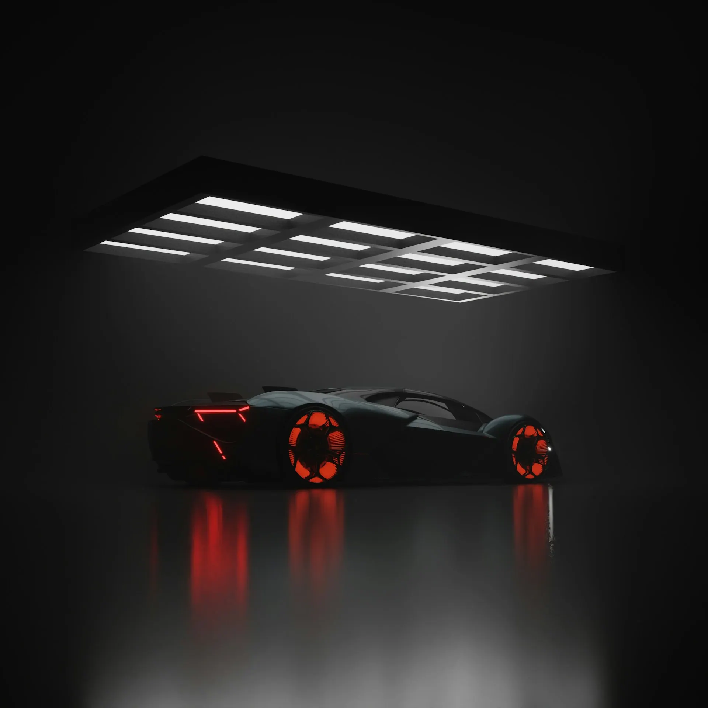
Под светом видно всё
Студия защиты и детейлинга: бронируем плёнкой, полируем, наносим керамику — в боксе со световой решёткой, где видна каждая царапина. Каждый день с 9:00 до 21:00.
Студия, где проверяют светом
Чёрные стены, белая решётка ламп на потолке — в таком свете глянец показывает каждую мелочь. Поэтому здесь видно и работу, и результат.
- 4,9168 оценок в 2ГИС (демо) — отвечаем на каждый отзыв
- Решётка светав ней видна каждая царапина — и работа, и результат
- от 1 часафары, антихром, бронь салона
- 9:00–21:00ежедневно, без выходных
Карта защиты
Отметьте на машине, что хотите защитить или обновить. Справа соберётся план: работы, цены и сроки «от» — из прайса студии.
Цены без звонка
Все 17 работ — с ценой и сроком «от». Точную цену мастер называет после осмотра.
Плёнка ложится в руках
Полиуретан растягивают, прогревают и выгоняют ракелем — без пузырей и заломов.
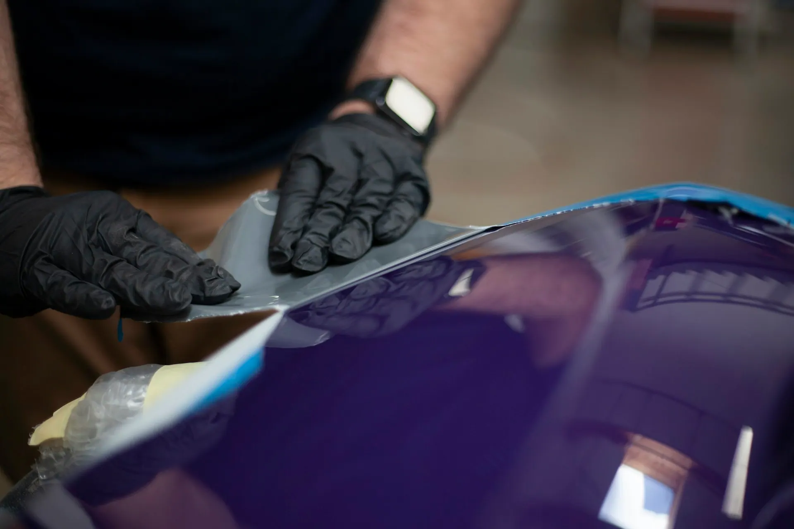
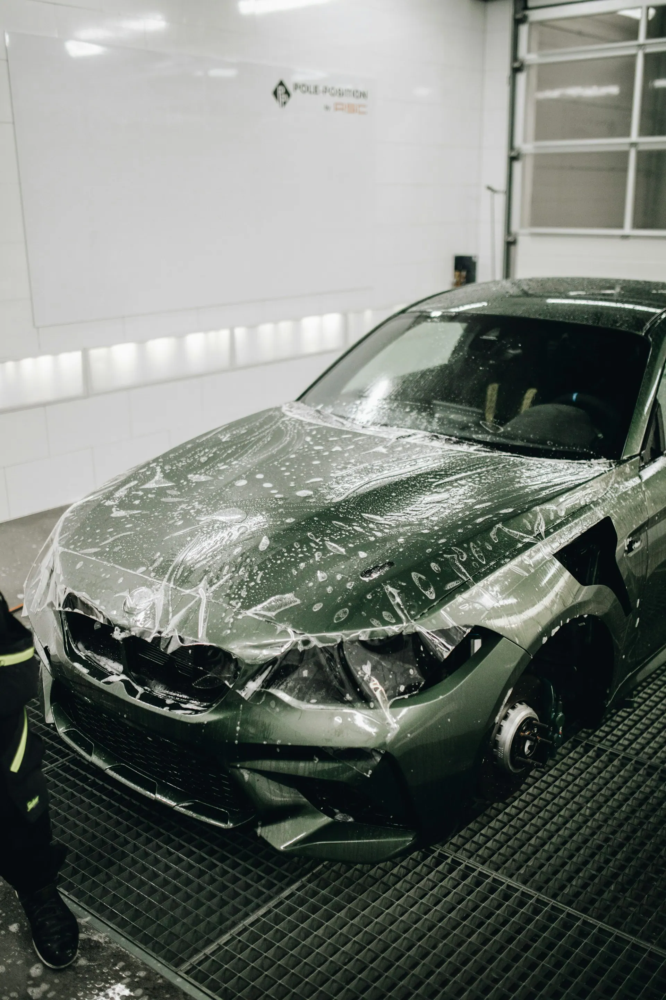
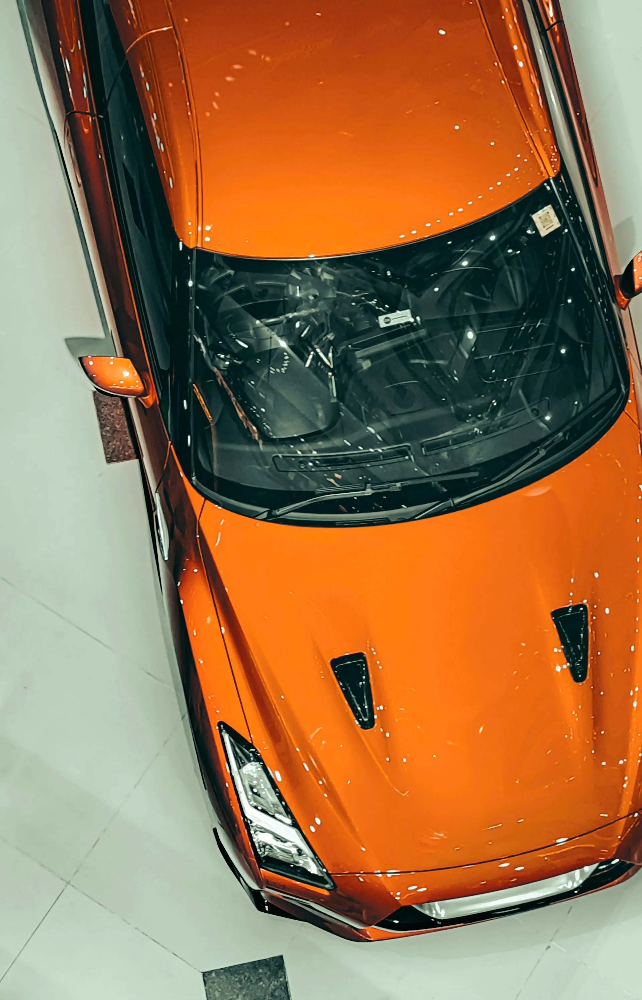
Из бокса
Несколько машин из бокса — под тем самым светом.
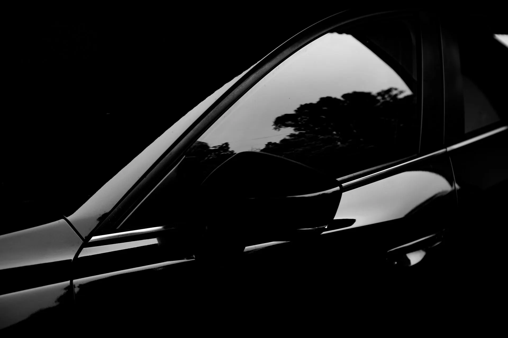
Чёрный глянец 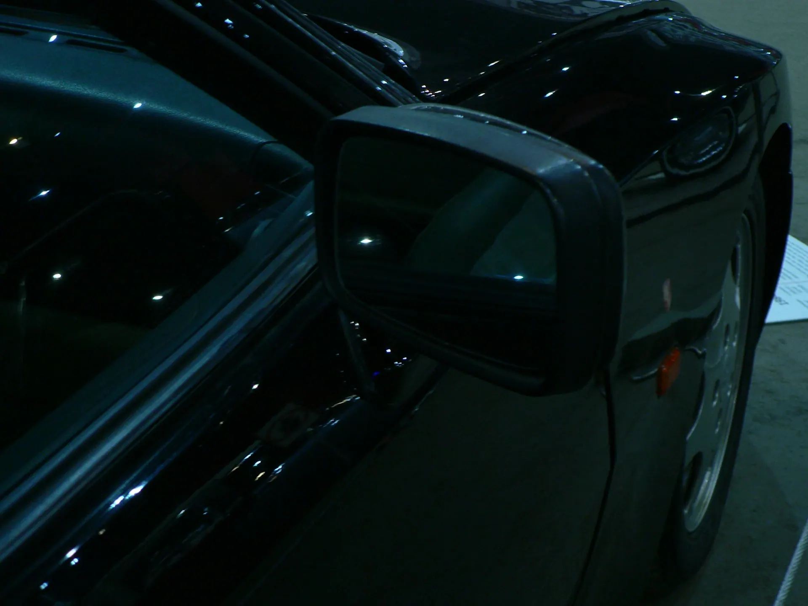
Зеркало и крыло 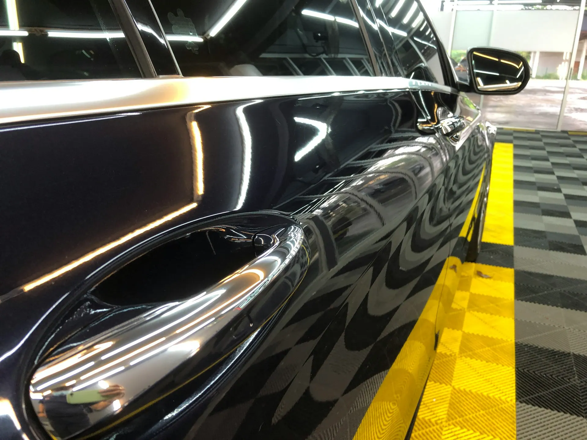
В боксе 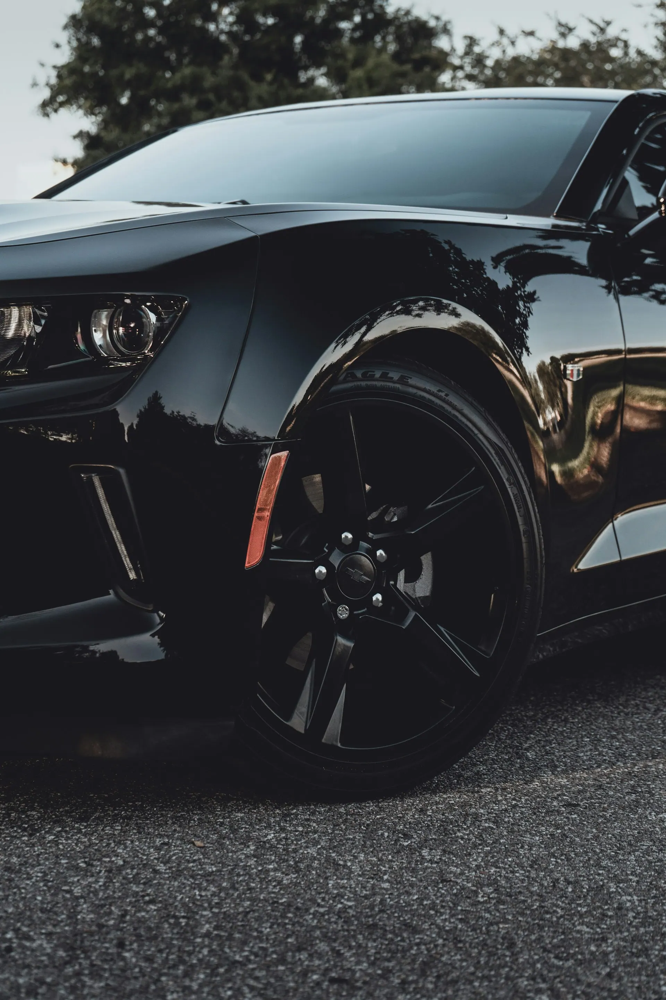
Диски в чёрном 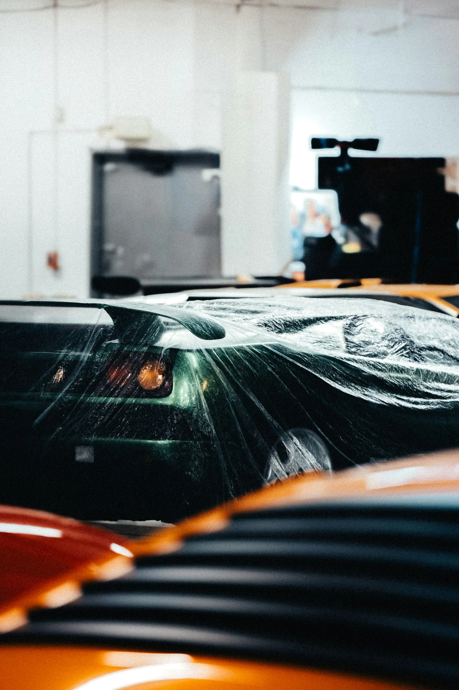
Плёнка на кузове 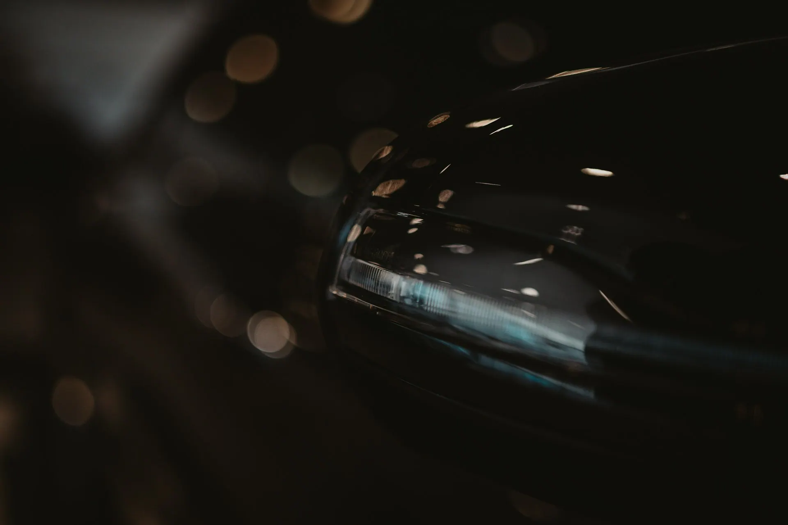
Свет и металл
Говорят клиенты
- 4,9168 оценок
на 2ГИС (демо)
Пригнал утром на полировку и керамику — вечером забрал машину, будто из салона. Под их лампами сразу видно, что сделано.
Сделали бронь фар и лобового, пока ждал с кофе. На «Карте защиты» сам отметил, что нужно, — цену знал заранее.
Матовая плёнка легла без единого пузыря, кромки завёрнуты аккуратно. Через полгода — как новая.
Удобно, что в приложении видно, на каком этапе машина. Не пришлось звонить ни разу.
Подарить уход
Сертификат — на любую сумму или на конкретную работу.
- Сертификат на суммуот 1 000 ₽Любая сумма — получатель сам выберет работу.
- Сертификат на услугупо прайсуНапример, полировка или бронь фар — в красивом конверте или QR в телефоне.
Блик в телефоне
Запись за минуту — работа, марка, госномер и время без переписки. В приложении видно, на каком этапе машина; бот в MAX и Telegram напомнит о записи.
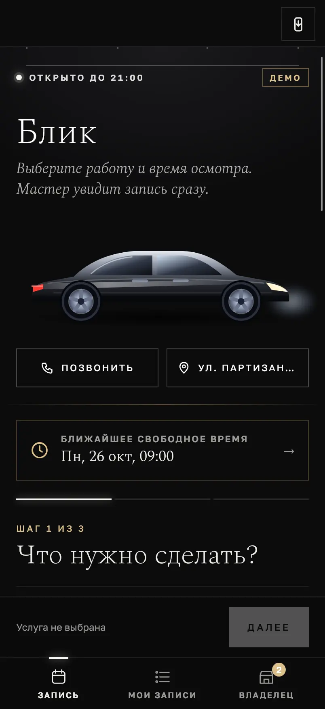
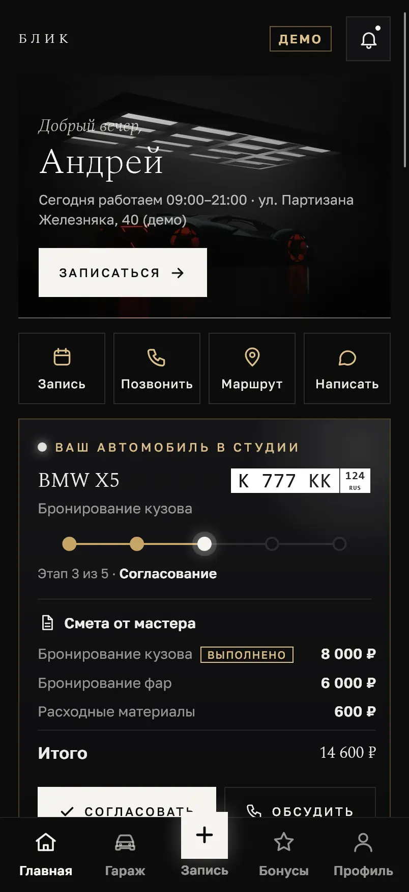
Загоните машину под свет
- Где
- ул. Партизана Железняка, 40 (демо), Красноярск
- Когда
- Ежедневно 09:00–21:00
- Как
- Осмотр, план работ и цена — на месте
Вопросы
Сколько занимает полировка и керамика?
Полировка — от 5 часов, керамическое покрытие — от 12 часов. Точный срок мастер скажет после осмотра.
От чего защищает бронеплёнка?
Полиуретановая плёнка защищает от царапин, сколов и камней, от соли, реагентов, птичьего помёта и смолы — и сохраняет блеск кузова.
Сколько служит плёнка на лобовом стекле?
От года. Работа — от 2 часов, цена — от 25 000 ₽.
Можно подождать в студии?
Да. Мелкие работы — полировка фар от 30 минут, бронь фар, антихром и вмятины без покраски от часа. Есть зона ожидания и кофе.
Можно подарить?
Да, сертификат на любую сумму от 1 000 ₽ или на конкретную работу.
Как нас найти
- Адрес
- ул. Партизана Железняка, 40 (демо), Красноярскбокс 3, въезд с торца
- Часы работы
- Ежедневно 09:00–21:00
- Телефон
- +7 900 000-00-00
ул. Партизана Железняка, 40 (демо), Красноярск